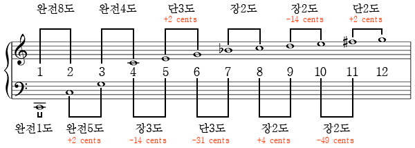

- 음정과 음정간의 관계
- 완전음정과 장(단)음정
- 조표가 없는 Cmaj 장조에서
- 음정 계산
- 장조(Major Chord)와 단조(Minor Chord)
- 장조와 단조의 으뜸음
Hypertext Markup Language(HTML)
음정[Interval, 音程]
이기혁(Damiano)
음정
음정(音程, interval)은 음악이론에서 두 음의 높이 차이,
즉 두 음 사이의 거리를 나타내는 용어이다.
두 음이 시차를 두고 순차적으로 울리는 것을 선율적 음정,
동시에 울리는 것을 화성적 음정이라고 한다.
